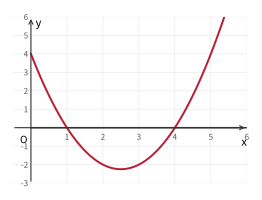

ホーム ＞ 数学II ＞ 指数関数
方程式 \(4^x-5\cdot2^x+4=0\) の実数解の個数を求めよ。
\(t=2^x>0\) とおき、\(t\) の2次方程式の正の解の個数を調べる（判別式・和・積）。\(t\) と \(x\) は1対1。
\(t=2^x>0\)。
\(D=5^2-4\cdot4=9\)、解の和 \(5\)、積 \(4\)（ともに正）。

\(t\) の正の解 \(2\) 個。\(t\) 1つにつき \(x\) は1つ。
【答案（テストに書く形）】
答